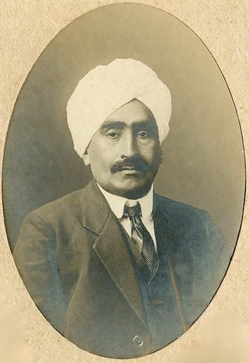
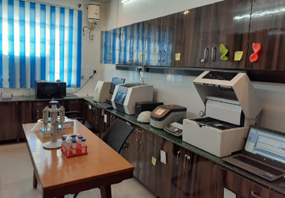

Project Overview
16
Validated citations integrated into the website
6
Interactive tabs for fast exploration
1946
Year Sahni established the institute at Lucknow
Research Method Lens
The core argument treated Sahni not only as a scientist but as a method-builder who linked fossil evidence, evolutionary reasoning, and institution design into a long-term national knowledge system.
Historical and Public Significance
The project connects scientific practice with postcolonial state formation, showing how disciplinary standards, archival control, and training pipelines shape durable public capacity.
Evidence Architecture
Evidence used here spans biography sources, institute records, global history-of-science studies, and BSIP program pages on current research infrastructure.
Website Design Intent
The visual style mirrors a fossil-and-field aesthetic with layered background atmospherics, rotating orbital motifs, and subtle 3D interaction to avoid a generic template look.
Biography and Legacy
Biographical Core
Birbal Sahni (1891-1949) was born in Bhera, studied at Government College Lahore and Emmanuel College, Cambridge, and became one of the major figures in global paleobotany. He established the Institute of Palaeobotany in Lucknow in 1946 and helped transform fossil plant studies in India from cataloguing work into interpretive science.
His scientific environment was deeply shaped by his father, Ruchi Ram Sahni, an educator, scientist, and reform-minded public intellectual. This early intellectual ecology influenced both Sahni's rigorous method and his public-facing institutional vision.
Sahni's research emphasized integrative inference: morphology + stratigraphy + evolutionary reasoning. In doing so, he created methodological pathways still visible in contemporary BSIP work across palynology, isotope studies, biomarkers, and DNA-based historical reconstruction.



Chronological Timeline
1891
Born in Bhera, Western Punjab (now in Pakistan).
1911
Graduated from Punjab University, then proceeded for higher studies in Cambridge.
1919
Received D.Sc. (University of London) and returned to India.
1921
Joined Lucknow University, where he built one of India's foremost paleobotanical centres.
1936
Elected Fellow of the Royal Society (FRS), first Indian botanist to receive this distinction.
1946
Founded the Institute of Palaeobotany and the Palaeobotanical Society in Lucknow.
1948
Advanced work on Pentoxyleae/Pentoxylales and broader continental-drift linked questions.
1949
Died shortly after foundation-stone events; institutional continuity was sustained by Savitri Sahni.
Present
The institute, now BSIP, continues multidisciplinary earth-life sciences including palynology, geochemistry, climate archives, and ancient DNA.
Full Essay
Introduction
Birbal Sahni's life invites a methodological question that exceeds conventional biography: how does a scientist convert personal scholarship into durable public capacity. In late colonial India, natural history often served survey administration and extractive mapping, whereas disciplinary interpretation remained tied to metropolitan authority. Sahni altered that structure by joining fossil analysis, evolutionary reasoning, and institution design into one coherent program; consequently, his career marks a transition from data collection under empire to knowledge production within an emerging scientific nation. wiki_birbalpalaeobot_bioscience_state_nation
This essay develops that argument through a sequential analysis of his origin, education, research contributions, notable achievements, and social impact. It begins with the biographical foundations that shaped his scientific temperament, then traces how methodological innovation in paleobotany supported larger nation-building goals, and finally evaluates why his institutional legacy remains analytically relevant for contemporary research methodology. from_lahore_lucknowbsip_history
Origin, Birth, and Family Background
Birbal Sahni was born on 14 November 1891 in Bhera, Western Punjab, then in British India and now in Pakistan. The location matters because Bhera lies close to the Salt Range, a fossil-rich geological zone that exposed him early to stratified landscapes and deep-time imagination. His place of origin therefore provided more than biographical detail; it offered a natural archive that could stimulate geological curiosity before formal specialization began. wiki_birbalfrom_lahore_lucknow
His brief family history clarifies the social conditions of that curiosity. His father, Lala Ruchi Ram Sahni, served as a chemistry professor at Government College Lahore and participated in a reformist scientific culture influenced by rational pedagogy and public education. Accounts of the household describe an environment where scientific discussion, field observation, and civic responsibility coexisted, and this family-learning ecology appears to have cultivated Birbal Sahni's later commitment to both rigorous inquiry and knowledge democratization. The family connection to Brahmo Samaj values, particularly rational critique and social reform, further reinforced an anti-obscurantist orientation that remained visible in his professional life. punjab_scienceruchi_ramwiki_birbal
Education and Intellectual Formation
Sahni received early higher education at Government College Lahore, where he completed foundational botanical and geological training before moving to Cambridge. This transition from provincial academic space to a leading imperial university did not simply expand his credential profile; it transformed his methodological toolkit. At Emmanuel College, under A. C. Seward, he absorbed comparative morphology, stratigraphic reasoning, and taxonomic discipline at a level that allowed him to evaluate fossil evidence as a connected system rather than as isolated specimens. from_lahore_lucknow
The most consequential dimension of his education emerged after his return to India in 1919. Many colonial-era scholars remained embedded in metropolitan validation structures, but Sahni pursued a return-with-purpose strategy: he applied global methodological standards to Indian material while asserting interpretive priority for Indian scientists. This repositioning turned education into a sovereignty instrument. It also established a durable model for postcolonial scientific practice, where external training is not rejected, yet local archive control and domestic institution building remain non-negotiable. science_state_nationpalaeobot_biofrom_lahore_lucknow
Research Contributions: Method, Evidence, and Synthesis
Sahni's principal research contribution lies in transforming Indian paleobotany from descriptive fossil listing into evidence-integrated biological interpretation. Before this shift, plant fossils were often treated as stratigraphic markers within geological survey routines. Sahni reoriented the field by linking morphology, depositional context, and evolutionary inference, and this methodological integration expanded both explanatory scope and disciplinary credibility. palaeobot_bio
His work on Gondwana flora, especially Glossopteris, illustrates the structure of that transformation. By studying fossil distribution in relation to glacial and periglacial contexts, he challenged simplified succession assumptions and demonstrated how floral evidence could inform paleoclimate and paleogeographic reconstruction. The implication was systemic: Indian plant fossils became central evidence in broader discussions of southern continent connectivity, not merely local curiosities in museum catalogs. regionalism_mobilismfrom_lahore_lucknow
Another major contribution was whole-plant reconstruction from disarticulated organs, particularly in Rajmahal material where stem, leaf, and reproductive structures could be anatomically correlated. This organ-correlation method reduced taxonomic fragmentation and shifted interpretive emphasis toward organism-level reconstruction. By reconnecting separated fossil parts into biologically plausible entities, Sahni moved the field toward developmental coherence and functional interpretation. palaeobot_bio
His late work on Pentoxyleae (now Pentoxylales) further demonstrates methodological courage. The group displayed a trait combination that resisted neat linear classification, and Sahni treated that anomaly as evidence to be explained rather than noise to be ignored. In methodological terms, this stance reflects high epistemic discipline: when morphology complicates taxonomy, theory must adapt to data, not the reverse. pentoxylales_affinities
Notable Achievements and Institutional Leadership
Sahni's notable achievements include both personal recognition and institutional construction. He was elected Fellow of the Royal Society in 1936, becoming the first Indian botanist to receive that distinction, which signaled international acknowledgment of his scientific authority. Yet his deeper achievement was domestic: he used this authority to build Indian research infrastructure rather than pursuing only individual prestige. wiki_birbal
In 1946, he helped establish the Palaeobotanical Society and the Institute of Palaeobotany in Lucknow, creating an organizational framework for fossil curation, specialist training, and long-horizon research planning. This step aligned with the transition from colonial extraction science to development-oriented national science in the years surrounding independence. The institute therefore functioned as both a research center and a sovereignty institution, because it anchored interpretive labor, archival control, and disciplinary reproduction within India. bsip_historybsip_wiki
Sahni died on 10 April 1949, shortly after the formal foundation-phase ceremonies for the institute. The continuity of his vision depended substantially on Savitri Sahni's administrative and intellectual stewardship, which helped stabilize the institution during its vulnerable formative period. That continuity confirms that his contribution cannot be reduced to charismatic leadership; he created a transferable institutional architecture capable of surviving founder loss. bsip_historyfrom_lahore_lucknow
Social Impact and Public Significance
The social impact of Sahni's work operated across scientific, educational, and civic registers. Scientifically, he established a discipline that trained generations of Indian researchers to work with domestic fossil archives at international standards. Educationally, he advanced a research culture in which field evidence, analytical rigor, and conceptual synthesis were taught as an integrated craft. Civicly, he contributed to a postcolonial confidence narrative in which India could produce first-order historical science about its own geological past. from_lahore_lucknowbsip_historyscience_state_nation
His international collaborations also produced a broader social meaning. Exchanges with South African and Chinese scholars positioned Indian paleobotany within transregional evidence networks and reduced dependence on singular metropolitan knowledge circuits. Such collaboration did not dilute national agency; it strengthened it, because India participated as a data-rich, conceptually active node in global scientific debate. This pattern remains instructive for contemporary policy, where strategic collaboration and domestic capacity must grow together rather than in sequence. regionalism_mobilismtrans_himalayan_articletrans_himalayan_pdf
Sahni's polymathic engagements in archaeology and numismatics further widened his public impact. His work on ancient coin-casting techniques and archaeobotanical inference linked natural history to economic history and material culture, demonstrating that evidence methods can travel across disciplines when analytical standards remain high. This interdisciplinary transfer capacity contributed to a broader social legitimacy for science, because it showed that rigorous method could illuminate not only plant evolution but also civilizational process. palaeobot_biowiki_birbalfrom_lahore_lucknow
Contemporary Relevance of the Sahni Legacy
The contemporary Birbal Sahni Institute of Palaeosciences extends his framework into new methodological domains, including palynology, isotope studies, biomarker analysis, dendrochronology, and ancient DNA research. These expansions represent disciplined continuity rather than institutional drift: fragmentary traces are still assembled through layered evidence logic to reconstruct historical environments, biotic transitions, and population dynamics. isti_bsippalaeoscience_todaysponsored_projectsdna_lab
This continuity carries a methodological lesson for research training in India today. Durable scholarship requires more than publication output; it requires archive stewardship, intergenerational mentoring, and institution-level memory systems that preserve standards across personnel changes. Sahni's career, read in this light, offers an operational model of how scientific excellence can be socially embedded and historically sustained. bsip_historyscience_state_nation
Conclusion
Birbal Sahni's biography begins in Bhera with a precise birth record and a scientifically active family context, but its larger significance lies in what he built from those beginnings. Through advanced education, rigorous research contribution, notable disciplinary achievements, and long-range institution design, he helped convert paleobotany in India from a peripheral descriptive practice into a sovereign knowledge field with global relevance. His social impact persists because he treated method, training, and institution as interdependent components of scientific life. wiki_birbalfrom_lahore_lucknowbsip_history
For a course in research methodology, Sahni's legacy demonstrates a demanding but fruitful principle: evidence gains historical force when analytical precision is matched by organizational foresight. Scientific nation-building, in this perspective, is neither rhetorical aspiration nor policy slogan; it is the cumulative result of disciplined inference, strategic collaboration, and institutions designed to outlast their founders. science_state_nationtrans_himalayan_articleisti_bsip
Validated Sources and Citation Keys
- wiki_birbal - Wikipedia: Birbal Sahni
- palaeobot_bio - International Organisation of Palaeobotany biography
- science_state_nation - Science, State and Nation (Cambridge resource PDF)
- from_lahore_lucknow - Course manuscript in repository
- bsip_history - BSIP institute history
- punjab_science - Science in Punjab article
- ruchi_ram - Wikipedia: Ruchi Ram Sahni
- regionalism_mobilism - Cambridge chapter metadata (continental drift controversy)
- pentoxylales_affinities - The Affinities of the Pentoxyleae (PDF)
- trans_himalayan_pdf - Trans-Himalayan science PDF
- trans_himalayan_article - Trans-Himalayan science article page
- bsip_wiki - Wikipedia: BSIP
- isti_bsip - India STI portal entry for BSIP
- palaeoscience_today - Palaeoscience Today newsletter PDF
- sponsored_projects - BSIP sponsored projects
- dna_lab - BSIP DNA Lab page
Image credits: Wikimedia Commons images were used for Birbal Sahni, Ruchi Ram
Sahni, Glossopteris, and BSIP logo. Additional institute visuals were sourced from official BSIP
pages linked above.